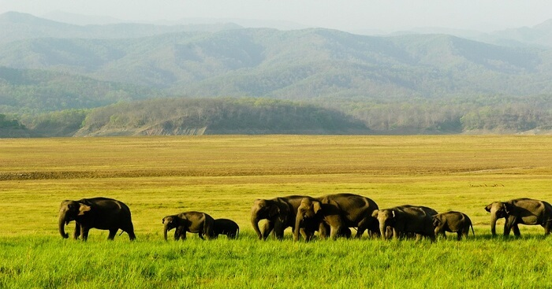
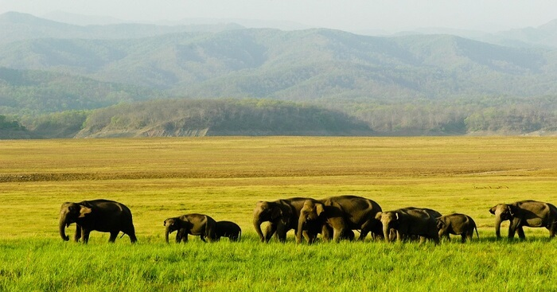

Manas National Park
Manas National Park or Manas Wildlife Sanctuary (Manox Rastriyo Uddyan) is a national park, UNESCO Natural World Heritage site, a Project Tiger reserve, an elephant reserve and a biosphere reserve in Assam, India. Located in the Himalayan foothills, it is contiguous with the Royal Manas National Park in Bhutan. The park is known for its rare and endangered endemic wildlife such as the Assam roofed turtle, hispid hare, golden langur and pygmy hog. Manas is famous for its population of the wild water buffalo.The name of the park is originated from the Manas River, which is named after the serpent goddess Manasa. The Manas National Park was declared a sanctuary on 1 October 1928 with an area of 360 km2.It was declared a World Heritage site in December 1985 by UNESCO.On 25 February 2008, the area was increased to 950 km2.The Manas hosts more than 450 species of birds.The sanctuary has recorded 55 species of mammals, 380 species of birds, 50 of reptiles, and 3 species of amphibians. Manas is located in the foothills of the Eastern Himalaya and is densely forested. The Manas river flows through the west of the park and is the main river within it. It is a major tributary of Brahmaputra river and splits into two separate rivers, the Bwrsi and Bholkaduba as it reaches the plains.